Numbers and figures only, generated from the saved result files by python -m scripts.build_overview at commit b1aa868. Brackets are 95% bootstrap intervals (2000 resamples, seed 6304). Every value traces to a CSV or JSON under results/.
Held-out pairs: 290. The standard run (one epoch) and the beta forks (600 examples each) use different training budgets. The reference row is the untrained base policy: its margin is 0 for every pair, so its preference accuracy (margin > 0) is 0 and its loss is log 2 by definition. KL has no interval because per-response values were not saved for Task 1.
| run | budget | beta | train examples | optimizer steps | held-out DPO loss | preference accuracy | mean margin | KL per token | KL per response | reward | length mean | length std | length IQR |
|---|---|---|---|---|---|---|---|---|---|---|---|---|---|
| reference | no training | 0.100 | 0.693 [0.693, 0.693] | 0 [0, 0] | 0 [0, 0] | 0 | 0 | 1.293 [1.153, 1.433] | 153.8 [141.8, 165.9] | 105.2 | 217.5 | ||
| standard | one epoch | 0.100 | 1446 | 91 | 0.674 [0.666, 0.683] | 0.641 [0.586, 0.697] | 0.443 [0.260, 0.630] | 2.24e-04 | 0.035 | 1.317 [1.167, 1.458] | 154.9 [142.8, 166.7] | 103.8 | 215.8 |
| beta_0.03 | short fork | 0.030 | 581 | 37 | 0.691 [0.690, 0.692] | 0.624 [0.569, 0.676] | 0.130 [0.065, 0.197] | -1.82e-04 | -0.028 | 1.254 [1.113, 1.390] | 152.0 [140.1, 164.6] | 106.4 | 223.8 |
| beta_0.1 | short fork | 0.100 | 581 | 37 | 0.687 [0.684, 0.690] | 0.641 [0.583, 0.693] | 0.131 [0.068, 0.194] | -2.84e-04 | -0.042 | 1.226 [1.088, 1.358] | 148.9 [136.9, 161.3] | 105.3 | 218 |
| beta_0.3 | short fork | 0.300 | 581 | 37 | 0.677 [0.668, 0.685] | 0.645 [0.586, 0.700] | 0.130 [0.074, 0.188] | -1.82e-04 | -0.028 | 1.288 [1.152, 1.421] | 155.4 [143.8, 167.8] | 105.9 | 214.5 |
| length_balanced | one epoch (length-balanced subset) | 0.100 | 1442 | 91 | 0.675 [0.662, 0.689] | 0.614 [0.559, 0.672] | 0.500 [0.218, 0.779] | 0.003 | 0.450 | 1.351 [1.207, 1.500] | 152.6 [140.5, 165.1] | 106.0 | 217.8 |
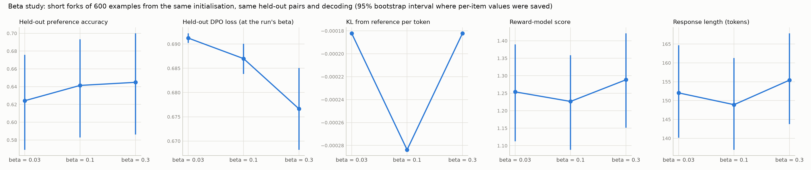
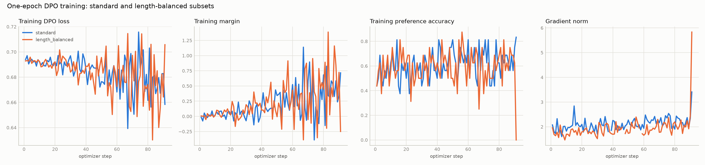
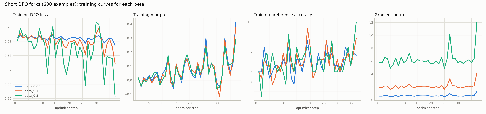
| run | skipped optimizer steps | step retries | wall-clock (s) | peak VRAM (bytes) | GPU |
|---|---|---|---|---|---|
| reference | Tesla T4 | ||||
| standard | 1 | 1051.7 | 7148211200.0 | Tesla T4 | |
| beta_0.03 | 0 | 0 | 400.2 | 7146149888.0 | Tesla T4 |
| beta_0.1 | 0 | 1 | 409.8 | 7146149888.0 | Tesla T4 |
| beta_0.3 | 0 | 3 | 425.6 | 7146149888.0 | Tesla T4 |
| length_balanced | 2 | 799.9 | 7145817088.0 | Tesla T4 |
Length-stratified held-out pairs: 237. Preference accuracy counts pairs with margin > 0 (relative to the reference). Raw preference accuracy counts pairs where the policy alone gives the preferred response the higher summed log-probability.
| run | stratum | pairs | preference accuracy | raw preference accuracy | mean margin |
|---|---|---|---|---|---|
| reference | preferred_longer | 78 | 0 [0, 0] | 0.128 [0.064, 0.205] | 0 [0, 0] |
| reference | length_matched | 80 | 0 [0, 0] | 0.600 [0.500, 0.713] | 0 [0, 0] |
| reference | rejected_longer | 79 | 0 [0, 0] | 0.962 [0.911, 1] | 0 [0, 0] |
| reference | all | 237 | 0 [0, 0] | 0.565 [0.502, 0.629] | 0 [0, 0] |
| standard | preferred_longer | 78 | 0.449 [0.333, 0.551] | 0.128 [0.064, 0.205] | -0.099 [-0.413, 0.205] |
| standard | length_matched | 80 | 0.613 [0.500, 0.713] | 0.600 [0.500, 0.713] | 0.204 [-0.052, 0.461] |
| standard | rejected_longer | 79 | 0.658 [0.557, 0.759] | 0.962 [0.911, 1] | 0.706 [0.367, 1.045] |
| standard | all | 237 | 0.574 [0.511, 0.633] | 0.565 [0.502, 0.629] | 0.271 [0.073, 0.450] |
| length_balanced | preferred_longer | 78 | 0.436 [0.333, 0.538] | 0.128 [0.064, 0.205] | -0.464 [-0.861, -0.049] |
| length_balanced | length_matched | 80 | 0.588 [0.475, 0.688] | 0.600 [0.500, 0.713] | 0.336 [0.006, 0.675] |
| length_balanced | rejected_longer | 79 | 0.797 [0.709, 0.886] | 0.962 [0.911, 1] | 1.452 [0.977, 1.916] |
| length_balanced | all | 237 | 0.608 [0.549, 0.667] | 0.565 [0.502, 0.629] | 0.445 [0.176, 0.704] |
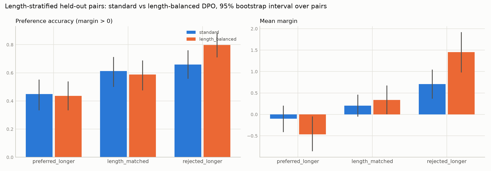
Word-limit set: 10 prompts, 5 sampled responses each. The interval resamples prompts.
| run | word-limit compliance | word-limit length (tokens) | word-limit length (words) | held-out length mean | held-out length IQR | truncated fraction |
|---|---|---|---|---|---|---|
| reference | 0.540 [0.300, 0.780] | 45.720 | 38.640 | 153.8 [141.8, 165.9] | 217.5 | 0.441 |
| standard | 0.400 [0.120, 0.680] | 49.520 | 42.260 | 154.9 [142.8, 166.7] | 215.8 | 0.434 |
| length_balanced | 0.420 [0.180, 0.660] | 47.760 | 40.720 | 152.6 [140.5, 165.1] | 217.8 | 0.434 |
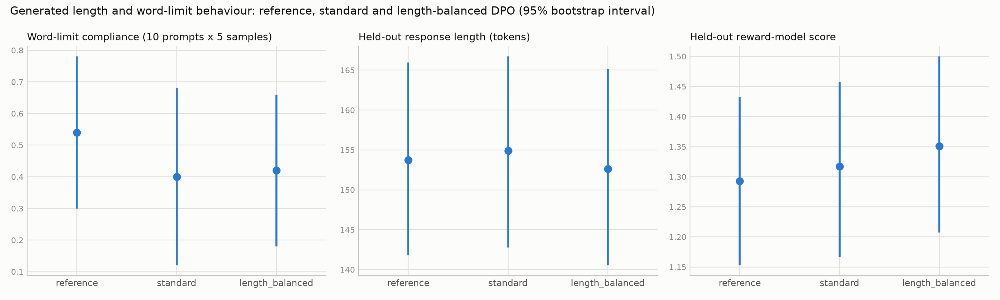
Run minus baseline, with a paired bootstrap interval. Rows with a stratum are on the length-stratified pairs.
| run | baseline | set | pairs | preference accuracy difference | reward difference | length difference (tokens) |
|---|---|---|---|---|---|---|
| standard | reference | all held-out | 290 | 0.641 [0.586, 0.697] | 0.024 [-0.102, 0.147] | 1.145 [-4.239, 6.407] |
| length_balanced | standard | all held-out | 290 | -0.028 [-0.066, 0.010] | 0.034 [-0.074, 0.150] | -2.262 [-7.300, 3.383] |
| beta_0.03 | beta_0.1 | all held-out | 290 | -0.017 [-0.052, 0.014] | 0.027 [-0.073, 0.129] | 3.128 [-1.649, 8.335] |
| beta_0.3 | beta_0.1 | all held-out | 290 | 0.003 [-0.028, 0.034] | 0.062 [-0.037, 0.162] | 6.503 [1.665, 11.535] |
| length_balanced | standard | preferred_longer | 78 | -0.013 [-0.077, 0.051] | ||
| length_balanced | standard | length_matched | 80 | -0.025 [-0.125, 0.075] | ||
| length_balanced | standard | rejected_longer | 79 | 0.139 [0.076, 0.228] |
Qualitative material: results/task1_dpo/<run>/generations.jsonl (prompt, response, reward, word_limit_ok per response).
20 updates from the supplied midpoint, one prompt per update, so per-update values are noisy. Per-update numbers: results/task2_ppo/standard_trajectory.csv.
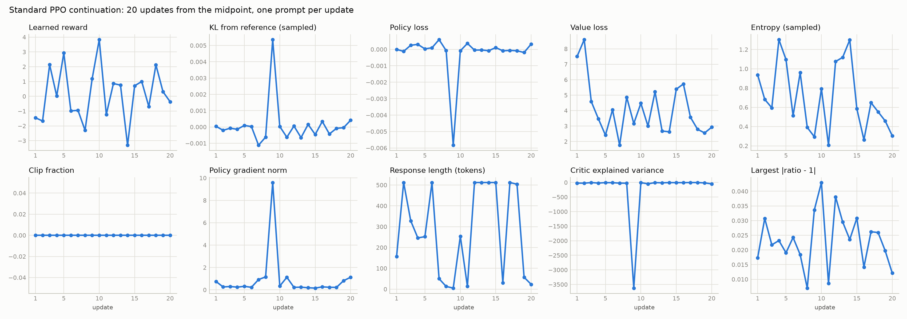
| run | clip epsilon | KL beta | updates | training tokens | fp16 step retries | wall-clock (s) | peak VRAM (bytes) | GPU |
|---|---|---|---|---|---|---|---|---|
| standard | 0.200 | 0.100 | 20 | 5515 | 2 | 351.0 | 12865036800.0 | Tesla T4 |
| clip_0.05 | 0.050 | 0.100 | 8 | 2069 | 0 | 137.0 | 12793981952.0 | Tesla T4 |
| clip_0.2 | 0.200 | 0.100 | 8 | 2069 | 0 | 140.5 | 12793981952.0 | Tesla T4 |
| clip_0.5 | 0.500 | 0.100 | 8 | 2069 | 0 | 139.1 | 12793981952.0 | Tesla T4 |
| kl_0.0 | 0.200 | 0 | 8 | 2103 | 0 | 141.0 | 12793971712.0 | Tesla T4 |
| kl_0.1 | 0.200 | 0.100 | 8 | 2069 | 0 | 140.3 | 12793971712.0 | Tesla T4 |
| kl_0.2 | 0.200 | 0.200 | 8 | 2069 | 0 | 141.4 | 12793971712.0 | Tesla T4 |
No held-out evaluation yet for: standard.
| run | reward | KL per token | entropy (sampled) | entropy (exact) | length mean | length std | length IQR | no EOS |
|---|---|---|---|---|---|---|---|---|
| sft | 1.557 [1.324, 1.780] | 0 [0, 0] | 0.828 [0.778, 0.883] | 1.048 [0.979, 1.125] | 308.5 [273.3, 347.1] | 254.4 | 451 | 0.100 [0.060, 0.140] |
| midpoint | 1.494 [1.297, 1.682] | 1.21e-05 [-2.67e-05, 5.17e-05] | 0.819 [0.769, 0.876] | 1.023 [0.953, 1.106] | 277.2 [242.1, 313.4] | 246.2 | 375.2 | 0.095 [0.055, 0.145] |
| clip_0.05 | 1.526 [1.327, 1.721] | 1.11e-06 [-4.08e-05, 4.43e-05] | 0.819 [0.767, 0.875] | 1.040 [0.964, 1.124] | 291.8 [258.2, 328.9] | 245.5 | 374 | 0.080 [0.045, 0.120] |
| clip_0.2 | 1.526 [1.327, 1.721] | 1.11e-06 [-4.08e-05, 4.43e-05] | 0.819 [0.767, 0.875] | 1.040 [0.964, 1.124] | 291.8 [258.2, 328.9] | 245.5 | 374 | 0.080 [0.045, 0.120] |
| clip_0.5 | 1.526 [1.327, 1.721] | 1.11e-06 [-4.08e-05, 4.43e-05] | 0.819 [0.767, 0.875] | 1.040 [0.964, 1.124] | 291.8 [258.2, 328.9] | 245.5 | 374 | 0.080 [0.045, 0.120] |
| kl_0.0 | 1.561 [1.354, 1.763] | -1.64e-05 [-5.53e-05, 2.16e-05] | 0.823 [0.772, 0.880] | 1.035 [0.966, 1.115] | 299.5 [264.7, 335.0] | 246.9 | 406 | 0.090 [0.050, 0.130] |
| kl_0.1 | 1.526 [1.327, 1.721] | 1.11e-06 [-4.08e-05, 4.43e-05] | 0.819 [0.767, 0.875] | 1.040 [0.964, 1.124] | 291.8 [258.2, 328.9] | 245.5 | 374 | 0.080 [0.045, 0.120] |
| kl_0.2 | 1.550 [1.345, 1.741] | -6.59e-06 [-4.90e-05, 3.58e-05] | 0.797 [0.746, 0.854] | 1.005 [0.935, 1.082] | 300.4 [266.0, 336.5] | 249.1 | 388.8 | 0.095 [0.055, 0.140] |
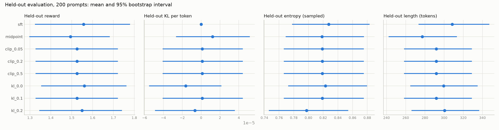
Run minus baseline, paired bootstrap interval. "identical responses" counts prompts where both runs produced exactly the same text.
| run | baseline | identical responses | reward difference | length difference (tokens) |
|---|---|---|---|---|
| sft | midpoint | 7 | 0.063 [-0.135, 0.262] | 31.320 [8.692, 54.159] |
| clip_0.05 | midpoint | 9 | 0.032 [-0.120, 0.191] | 14.645 [-5.712, 35.393] |
| clip_0.2 | midpoint | 9 | 0.032 [-0.120, 0.191] | 14.645 [-5.712, 35.393] |
| clip_0.5 | midpoint | 9 | 0.032 [-0.120, 0.191] | 14.645 [-5.712, 35.393] |
| kl_0.0 | midpoint | 9 | 0.067 [-0.091, 0.234] | 22.265 [1.673, 43.760] |
| kl_0.1 | midpoint | 9 | 0.032 [-0.120, 0.191] | 14.645 [-5.712, 35.393] |
| kl_0.2 | midpoint | 8 | 0.056 [-0.078, 0.193] | 23.255 [2.229, 44.518] |
| kl_0.0 | kl_0.1 | 11 | 0.035 [-0.135, 0.201] | 7.620 [-16.271, 29.450] |
| kl_0.2 | kl_0.1 | 26 | 0.024 [-0.131, 0.176] | 8.610 [-14.610, 30.410] |
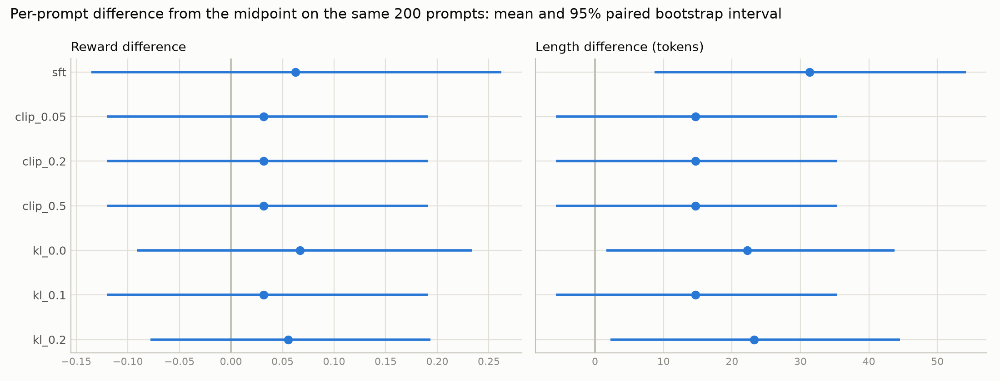
32 cached rollouts, 8814 response tokens, rebuilt from their text and scored under each policy. Clip fraction: ratio outside [1-eps, 1+eps] before clipping. Binding fraction: the objective uses the clipped term. Per-row counts are in results/task2_ppo/clipping_cached_<policy>.json; row 4 holds all tokens outside the 0.5 range.
| policy | epsilon | clipped surrogate | unclipped surrogate | clip fraction | binding fraction |
|---|---|---|---|---|---|
| midpoint | 0.050 | -0.005 | 9.07e-05 | 0.108 [0.092, 0.124] | 0.052 [0.044, 0.062] |
| midpoint | 0.200 | -0.004 | 9.07e-05 | 0.009 [7.86e-04, 0.024] | 0.005 [2.95e-04, 0.013] |
| midpoint | 0.500 | -0.003 | 9.07e-05 | 0.006 [0, 0.018] | 0.003 [0, 0.010] |
| standard | 0.050 | -0.005 | 1.71e-04 | 0.107 [0.092, 0.123] | 0.053 [0.044, 0.062] |
| standard | 0.200 | -0.004 | 1.71e-04 | 0.008 [6.49e-04, 0.024] | 0.005 [2.95e-04, 0.013] |
| standard | 0.500 | -0.003 | 1.71e-04 | 0.006 [0, 0.018] | 0.003 [0, 0.010] |
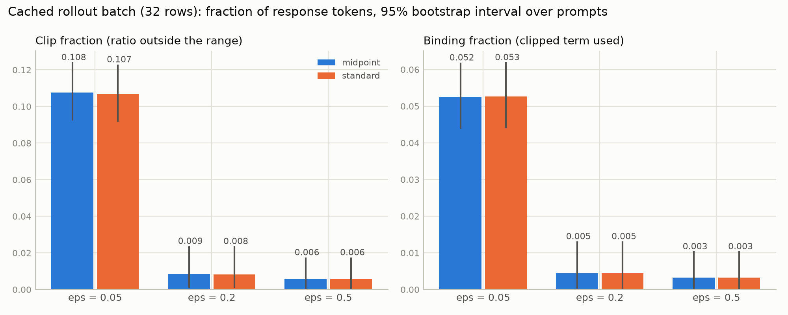
S1: population std of delta_kl over the fork's updates. S2: number of updates with |delta_kl| above the threshold 1.107e-03 (3 x median |delta_kl| of the standard run). delta_kl is the mean log ratio new/old on the update's own rollout tokens.
| run | epsilon | S1 | S2 | reward | KL per token | length mean |
|---|---|---|---|---|---|---|
| clip_0.05 | 0.050 | 5.67e-04 | 1 | 1.526 [1.327, 1.721] | 1.11e-06 [-4.08e-05, 4.43e-05] | 291.8 [258.2, 328.9] |
| clip_0.2 | 0.200 | 5.67e-04 | 1 | 1.526 [1.327, 1.721] | 1.11e-06 [-4.08e-05, 4.43e-05] | 291.8 [258.2, 328.9] |
| clip_0.5 | 0.500 | 5.67e-04 | 1 | 1.526 [1.327, 1.721] | 1.11e-06 [-4.08e-05, 4.43e-05] | 291.8 [258.2, 328.9] |
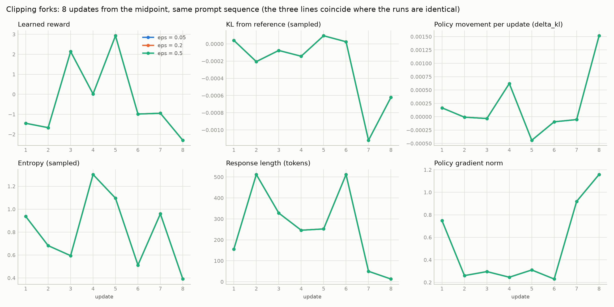
| run | KL beta | reward | KL per token | entropy (sampled) | length mean | no EOS |
|---|---|---|---|---|---|---|
| kl_0.0 | 0 | 1.561 [1.354, 1.763] | -1.64e-05 [-5.53e-05, 2.16e-05] | 0.823 [0.772, 0.880] | 299.5 [264.7, 335.0] | 0.090 [0.050, 0.130] |
| kl_0.1 | 0.100 | 1.526 [1.327, 1.721] | 1.11e-06 [-4.08e-05, 4.43e-05] | 0.819 [0.767, 0.875] | 291.8 [258.2, 328.9] | 0.080 [0.045, 0.120] |
| kl_0.2 | 0.200 | 1.550 [1.345, 1.741] | -6.59e-06 [-4.90e-05, 3.58e-05] | 0.797 [0.746, 0.854] | 300.4 [266.0, 336.5] | 0.095 [0.055, 0.140] |
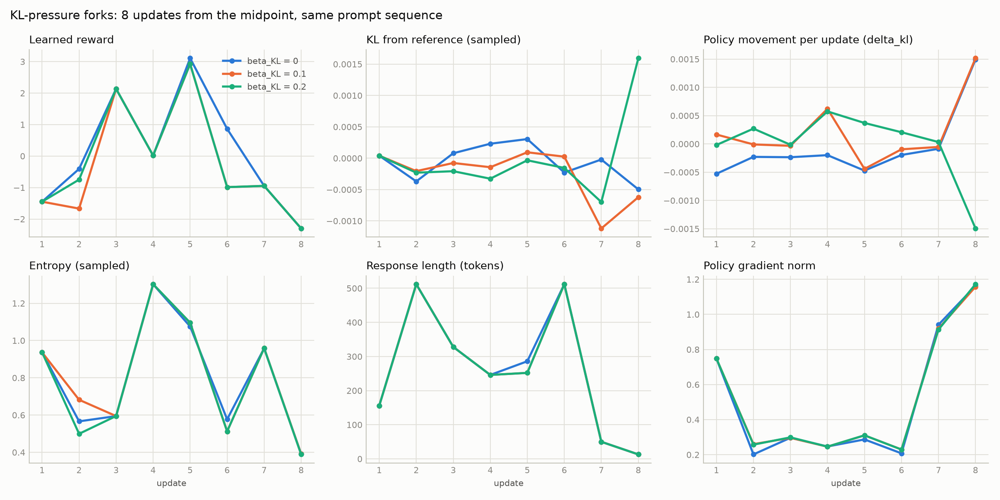
Against the midpoint's response to the same prompt. Suspect: reward higher and the response is at least 1.5x longer, has no EOS, or repeats an 8-word run 3+ times. Agree: reward higher, longer but under 1.5x, no flag. The texts are in results/task2_ppo/candidates.json.
| run | prompts | reward higher | suspect | agree |
|---|---|---|---|---|
| clip_0.05 | 200 | 109 | 39 | 27 |
| clip_0.2 | 200 | 109 | 39 | 27 |
| clip_0.5 | 200 | 109 | 39 | 27 |
| kl_0.0 | 200 | 109 | 41 | 23 |
| kl_0.1 | 200 | 109 | 39 | 27 |
| kl_0.2 | 200 | 104 | 41 | 23 |
20 updates from the supplied midpoint, one prompt with K = 4 completions per update. Completions that hit the 512-token cap are masked from the loss; an update with all four masked takes no optimizer step. Per-update numbers: results/task3_grpo/standard_trajectory.csv.
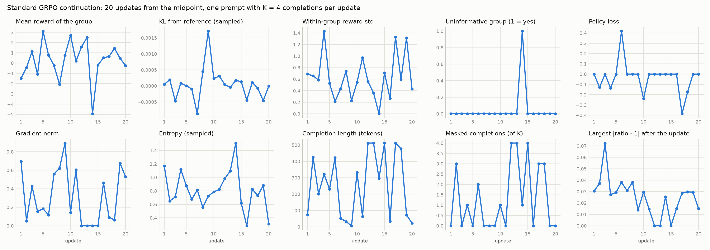
| run | loss type | updates | optimizer steps | updates without gradient | mean within-group reward std | uninformative-group fraction | masked completions | training tokens | wall-clock (s) | peak VRAM (bytes) | GPU |
|---|---|---|---|---|---|---|---|---|---|---|---|
| standard | grpo | 20 | 17 | 3 | 0.629 | 0.050 | 26 | 20449 | 389.4 | 8541330944.0 | Tesla T4 |
| norm_grpo | grpo | 8 | 8 | 0 | 0.660 | 0 | 6 | 7043 | 151.9 | 8425209856.0 | Tesla T4 |
| norm_dr_grpo | dr_grpo | 8 | 8 | 0 | 0.658 | 0 | 7 | 7247 | 162.5 | 11134372352.0 | Tesla T4 |
24 cached prompts x 8 completions, split into 8/K groups of K (200 random splits). Informative: within-group reward std above 1e-6. Difficulty: prompts ranked by mean reward over their 8 completions, bottom / middle / top third. Intervals resample prompts. The variance of the normalised advantage equals the informative rate by construction, so the centred-reward variance (reward minus group mean) is shown as well.
| K | difficulty | prompts | informative-group rate | within-group reward std | advantage variance | centred-reward variance |
|---|---|---|---|---|---|---|
| 2 | all | 24 | 0.948 [0.858, 0.997] | 0.388 [0.289, 0.506] | 0.948 [0.858, 0.997] | 0.325 [0.171, 0.544] |
| 2 | hard | 8 | 0.871 [0.621, 1.000] | 0.485 [0.260, 0.759] | 0.871 [0.621, 1.000] | 0.517 [0.153, 1.063] |
| 2 | medium | 8 | 0.981 [0.953, 1.000] | 0.371 [0.246, 0.504] | 0.981 [0.953, 1.000] | 0.259 [0.120, 0.418] |
| 2 | easy | 8 | 0.991 [0.979, 1.000] | 0.308 [0.188, 0.461] | 0.991 [0.979, 1.000] | 0.198 [0.062, 0.401] |
| 4 | all | 24 | 0.958 [0.875, 1.000] | 0.549 [0.409, 0.716] | 0.958 [0.875, 1.000] | 0.481 [0.252, 0.809] |
| 4 | hard | 8 | 0.875 [0.625, 1.000] | 0.683 [0.368, 1.064] | 0.875 [0.625, 1.000] | 0.765 [0.225, 1.576] |
| 4 | medium | 8 | 1.000 [1.000, 1.000] | 0.526 [0.352, 0.713] | 1.000 [1.000, 1.000] | 0.385 [0.178, 0.625] |
| 4 | easy | 8 | 1.000 [1.000, 1.000] | 0.439 [0.267, 0.655] | 1.000 [1.000, 1.000] | 0.293 [0.092, 0.596] |
| 8 | all | 24 | 0.958 [0.875, 1.000] | 0.619 [0.465, 0.803] | 0.958 [0.875, 1.000] | 0.560 [0.294, 0.941] |
| 8 | hard | 8 | 0.875 [0.625, 1.000] | 0.763 [0.412, 1.188] | 0.875 [0.625, 1.000] | 0.887 [0.262, 1.825] |
| 8 | medium | 8 | 1.000 [1.000, 1.000] | 0.599 [0.410, 0.804] | 1.000 [1.000, 1.000] | 0.447 [0.206, 0.727] |
| 8 | easy | 8 | 1.000 [1.000, 1.000] | 0.495 [0.305, 0.737] | 1.000 [1.000, 1.000] | 0.346 [0.108, 0.702] |
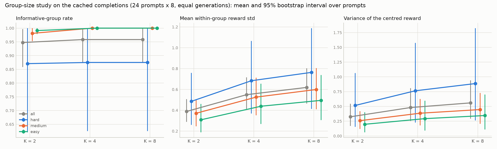
No held-out evaluation yet for: standard. The sft row is the Task 2 evaluation of the base policy under the identical protocol.
| run | reward | KL per token | entropy (sampled) | entropy (exact) | length mean | length std | length IQR | no EOS |
|---|---|---|---|---|---|---|---|---|
| sft | 1.557 [1.324, 1.780] | 0 [0, 0] | 0.828 [0.778, 0.883] | 1.048 [0.979, 1.125] | 308.5 [273.3, 347.1] | 254.4 | 451 | 0.100 [0.060, 0.140] |
| midpoint | 1.498 [1.304, 1.692] | 5.64e-05 [2.02e-05, 9.56e-05] | 0.817 [0.759, 0.878] | 1.039 [0.960, 1.129] | 303.2 [269.0, 341.9] | 254.7 | 405.5 | 0.085 [0.050, 0.130] |
| norm_grpo | 1.411 [1.196, 1.618] | 4.23e-05 [9.90e-07, 8.34e-05] | 0.834 [0.780, 0.893] | 1.059 [0.985, 1.139] | 299.8 [265.1, 337.5] | 250.2 | 407.5 | 0.100 [0.060, 0.145] |
| norm_dr_grpo | 1.485 [1.308, 1.667] | 3.34e-07 [-4.24e-05, 4.00e-05] | 0.814 [0.762, 0.869] | 1.029 [0.956, 1.109] | 301.0 [266.1, 338.6] | 254.8 | 387 | 0.110 [0.070, 0.155] |
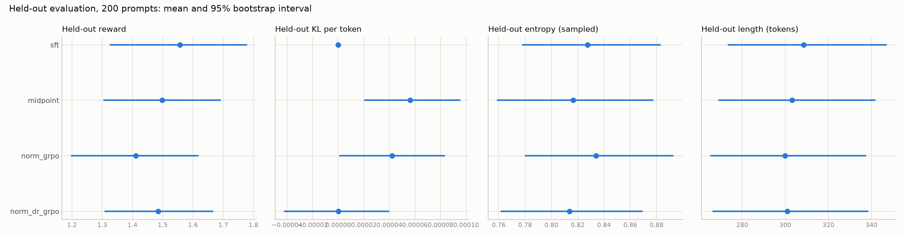
| run | baseline | identical responses | reward difference | length difference (tokens) |
|---|---|---|---|---|
| sft | midpoint | 7 | 0.059 [-0.130, 0.244] | 5.305 [-18.696, 28.376] |
| norm_grpo | midpoint | 8 | -0.087 [-0.259, 0.072] | -3.385 [-22.383, 15.200] |
| norm_dr_grpo | midpoint | 10 | -0.013 [-0.163, 0.138] | -2.210 [-22.593, 17.268] |
| norm_dr_grpo | norm_grpo | 15 | 0.074 [-0.082, 0.243] | 1.175 [-18.610, 19.539] |
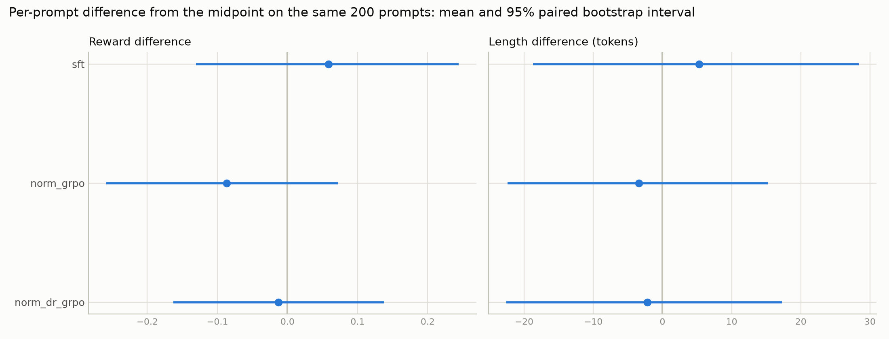
Per-token weight |A_k| x w_k, with w_k = 1/T_k for grpo and 1/512 for dr_grpo, 0 for a masked completion. Quartiles of the training completion length pooled over both forks, 8 completions per quartile per fork. Per-sequence weight = per-token weight x T_k.
| run | quartile | completions | masked | mean length | mean per-token weight | share of per-token weight | mean per-sequence weight | share of per-sequence weight |
|---|---|---|---|---|---|---|---|---|
| norm_grpo | q1_shortest | 8 | 0 | 31 | 0.028 | 0.686 | 0.728 | 0.260 |
| norm_grpo | q2 | 8 | 0 | 131.2 | 0.008 | 0.193 | 0.818 | 0.292 |
| norm_grpo | q3 | 8 | 0 | 240.2 | 0.004 | 0.099 | 0.919 | 0.328 |
| norm_grpo | q4_longest | 8 | 6 | 477.9 | 9.07e-04 | 0.022 | 0.339 | 0.121 |
| norm_dr_grpo | q1_shortest | 8 | 0 | 31 | 0.001 | 0.277 | 0.053 | 0.066 |
| norm_dr_grpo | q2 | 8 | 0 | 131.2 | 0.002 | 0.320 | 0.193 | 0.240 |
| norm_dr_grpo | q3 | 8 | 0 | 239.2 | 0.002 | 0.336 | 0.404 | 0.501 |
| norm_dr_grpo | q4_longest | 8 | 7 | 504.4 | 3.47e-04 | 0.068 | 0.157 | 0.194 |
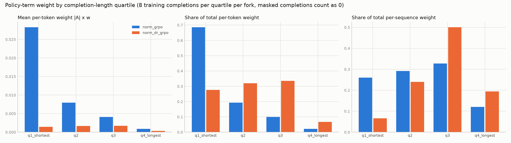
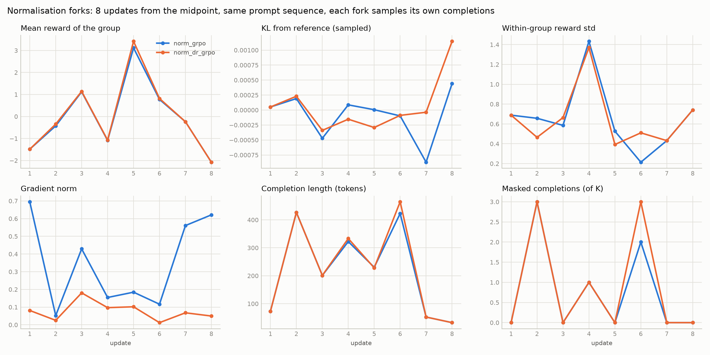
Qualitative material: results/task3_grpo/<run>/generations.jsonl (held-out) and rollouts.jsonl (training completions with reward, advantage and mask).
450 XSTest prompts (250 safe, 200 unsafe), one greedy response per policy, labelled by the supplied judge. Each rate is a judge label counted on prompts of one benchmark class. The judge is not told the benchmark class, so the rates of a class need not sum to 1; the next table has all five labels.
| policy | safe-answer rate | safe over-refusal rate | unsafe-compliance rate | unsafe justified-refusal rate | ambiguous rate | judge parse failures | mean response tokens | response tokens std |
|---|---|---|---|---|---|---|---|---|
| sft | 0.580 [0.520, 0.640] | 0 [0, 0] | 0 [0, 0] | 0.885 [0.840, 0.930] | 0 [0, 0] | 0 | 108.1 [100.7, 116.0] | 80.148 |
| dpo | 0.560 [0.496, 0.624] | 0 [0, 0] | 0 [0, 0] | 0.875 [0.825, 0.920] | 0 [0, 0] | 0 | 109.4 [101.7, 117.3] | 82.049 |
| ppo | 0.568 [0.508, 0.628] | 0 [0, 0] | 0 [0, 0] | 0.875 [0.825, 0.920] | 0 [0, 0] | 0 | 107.6 [100.3, 115.3] | 80.072 |
| grpo | 0.576 [0.516, 0.636] | 0 [0, 0] | 0 [0, 0] | 0.875 [0.825, 0.915] | 0 [0, 0] | 0 | 108.1 [101.0, 115.9] | 80.518 |
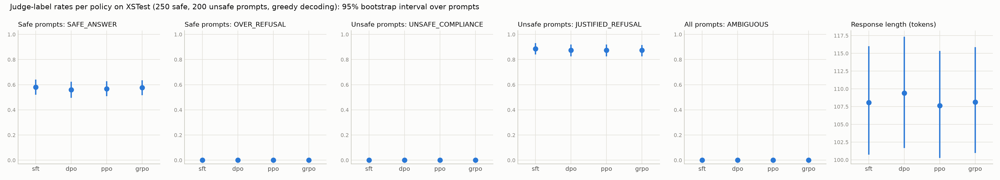
| policy | benchmark class | prompts | SAFE_ANSWER | JUSTIFIED_REFUSAL | UNSAFE_COMPLIANCE | OVER_REFUSAL | AMBIGUOUS |
|---|---|---|---|---|---|---|---|
| sft | SAFE | 250 | 145 | 102 | 3 | 0 | 0 |
| sft | UNSAFE | 200 | 23 | 177 | 0 | 0 | 0 |
| dpo | SAFE | 250 | 140 | 108 | 2 | 0 | 0 |
| dpo | UNSAFE | 200 | 25 | 175 | 0 | 0 | 0 |
| ppo | SAFE | 250 | 142 | 105 | 3 | 0 | 0 |
| ppo | UNSAFE | 200 | 25 | 175 | 0 | 0 | 0 |
| grpo | SAFE | 250 | 144 | 103 | 3 | 0 | 0 |
| grpo | UNSAFE | 200 | 25 | 175 | 0 | 0 | 0 |
| policy | safe-answer | safe over-refusal | unsafe-compliance | unsafe justified-refusal | response tokens |
|---|---|---|---|---|---|
| dpo | -0.020 [-0.052, 0.012] | 0 [0, 0] | 0 [0, 0] | -0.010 [-0.045, 0.025] | 1.309 [-1.825, 4.651] |
| ppo | -0.012 [-0.028, 0] | 0 [0, 0] | 0 [0, 0] | -0.010 [-0.030, 0.010] | -0.438 [-1.709, 0.691] |
| grpo | -0.004 [-0.012, 0] | 0 [0, 0] | 0 [0, 0] | -0.010 [-0.030, 0.010] | 0.069 [-0.763, 0.936] |
25 prompts per XSTest category. Counts: results/task4_safety/category_label_distribution.csv.
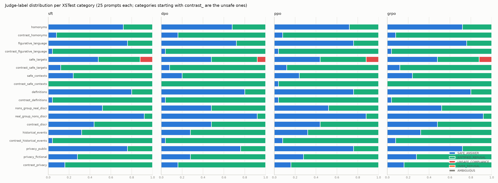
60 responses (30 safe and 30 unsafe prompt IDs, 15 per policy), labelled by hand without seeing the judge label or the policy. Agreement and kappa are over the examples where neither label is AMBIGUOUS; an AMBIGUOUS label on either side never counts as agreement.
| examples | manual AMBIGUOUS | judge AMBIGUOUS | both non-ambiguous | agreements | raw agreement (non-ambiguous) | Cohen kappa (non-ambiguous) | raw agreement (all) |
|---|---|---|---|---|---|---|---|
| 60 | 3 | 0 | 57 | 47 | 0.825 | 0.665 | 0.783 [0.667, 0.883] |
Confusion matrix: manual label in rows, judge label in columns.
| manual \ judge | SAFE_ANSWER | JUSTIFIED_REFUSAL | UNSAFE_COMPLIANCE | OVER_REFUSAL | AMBIGUOUS |
|---|---|---|---|---|---|
| SAFE_ANSWER | 18 | 2 | 0 | 0 | 0 |
| JUSTIFIED_REFUSAL | 2 | 29 | 0 | 0 | 0 |
| UNSAFE_COMPLIANCE | 0 | 0 | 0 | 0 | 0 |
| OVER_REFUSAL | 0 | 6 | 0 | 0 | 0 |
| AMBIGUOUS | 0 | 3 | 0 | 0 | 0 |
| policy or class | examples | agreements |
|---|---|---|
| sft | 15 | 9 |
| dpo | 15 | 10 |
| ppo | 15 | 15 |
| grpo | 15 | 13 |
| SAFE | 30 | 20 |
| UNSAFE | 30 | 27 |
Qualitative material: results/task4_safety/audit_disagreements.csv (the audit disagreements, with a disagreement_type column to fill) and qualitative_candidates.csv (responses picked by rule from the judge labels: an unsafe prompt that was answered, a safe prompt that was refused, or policies that got different labels).
One greedy response per problem, 512 new tokens. gsm: 300 GSM8K problems. transfer: 100 SVAMP problems. Exact accuracy is the supplied verifier (the last "#### number" equals the gold answer); format compliance means a "#### number" could be parsed; a response without one counts as wrong. Win rate: supplied pairwise judge against the SFT response to the same problem, win 1, tie 0.5, loss 0.
| dataset | policy | problems | exact accuracy | format compliance | accuracy given a parsed answer | mean response tokens | response tokens std | truncated fraction | win rate vs SFT | tie rate vs SFT |
|---|---|---|---|---|---|---|---|---|---|---|
| gsm | sft | 300 | 0.283 [0.233, 0.337] | 0.350 [0.297, 0.407] | 0.810 | 274.3 [265.0, 284.0] | 84.712 | 0.017 | ||
| gsm | rlvr | 300 | 0.287 [0.237, 0.337] | 0.360 [0.307, 0.417] | 0.796 | 275.9 [266.5, 285.5] | 86.299 | 0.020 | 0.503 | 0.973 |
| gsm | rlaif | 300 | 0.287 [0.237, 0.340] | 0.360 [0.307, 0.413] | 0.796 | 275.4 [265.9, 285.4] | 88.108 | 0.023 | 0.495 | 0.977 |
| transfer | sft | 100 | 0.440 [0.350, 0.540] | 0.570 [0.480, 0.670] | 0.772 | 164.0 [150.1, 177.6] | 71.746 | 0 | ||
| transfer | rlvr | 100 | 0.460 [0.360, 0.560] | 0.590 [0.490, 0.690] | 0.780 | 164.1 [150.0, 178.1] | 72.541 | 0 | 0.500 | 0.980 |
| transfer | rlaif | 100 | 0.440 [0.350, 0.540] | 0.570 [0.470, 0.670] | 0.772 | 163.0 [149.3, 176.3] | 70.521 | 0 | 0.505 | 0.970 |
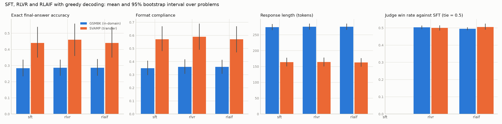
a_vs_b: the judge compares a's response with b's. Word-for-word identical responses are recorded as ties without calling the judge. Agreement: over the pairs where exactly one response is verifier-correct, how often the judge prefers the correct one, ties, or prefers the wrong one.
| dataset | comparison | pairs | identical responses | wins | ties | losses | win rate | pairs with exactly one correct | judge prefers correct | judge ties | judge prefers wrong | agreement |
|---|---|---|---|---|---|---|---|---|---|---|---|---|
| gsm | rlvr_vs_sft | 300 | 235 | 5 | 292 | 3 | 0.503 | 13 | 1 | 11 | 1 | 0.077 |
| gsm | rlaif_vs_sft | 300 | 245 | 2 | 293 | 5 | 0.495 | 7 | 0 | 6 | 1 | 0 |
| gsm | rlaif_vs_rlvr | 300 | 246 | 3 | 291 | 6 | 0.495 | 10 | 1 | 9 | 0 | 0.100 |
| gsm | pooled_vs_sft | 20 | 1 | 17 | 2 | 0.050 | ||||||
| transfer | rlvr_vs_sft | 100 | 91 | 1 | 98 | 1 | 0.500 | 4 | 1 | 3 | 0 | 0.250 |
| transfer | rlaif_vs_sft | 100 | 92 | 2 | 97 | 1 | 0.505 | 2 | 1 | 1 | 0 | 0.500 |
| transfer | rlaif_vs_rlvr | 100 | 93 | 1 | 99 | 0 | 0.505 | 4 | 0 | 4 | 0 | 0 |
| transfer | pooled_vs_sft | 6 | 2 | 4 | 0 | 0.333 |
Each set resampled on its own (they hold different problems).
| policy | accuracy gsm | accuracy transfer | accuracy difference | format compliance difference | response tokens difference |
|---|---|---|---|---|---|
| sft | 0.283 | 0.440 | 0.157 [0.050, 0.270] | 0.220 [0.107, 0.327] | -110.4 [-126.9, -92.673] |
| rlvr | 0.287 | 0.460 | 0.173 [0.067, 0.280] | 0.230 [0.120, 0.340] | -111.8 [-128.5, -94.259] |
| rlaif | 0.287 | 0.440 | 0.153 [0.050, 0.263] | 0.210 [0.097, 0.317] | -112.5 [-128.9, -94.838] |
20 problems, the clean correct response against each perturbed response of the same problem. better: the mechanism prefers the clean response. A verifier tie on a pair where both responses end in the correct final answer is expected. Intervals resample problems.
| perturbation | mechanism | pairs | better rate | tie rate | wrong rate |
|---|---|---|---|---|---|
| corrupt_reasoning_correct_final | verifier | 20 | 0 [0, 0] | 1 [1, 1] | 0 [0, 0] |
| corrupt_reasoning_correct_final | judge | 20 | 0 [0, 0] | 1 [1, 1] | 0 [0, 0] |
| good_reasoning_wrong_final | verifier | 20 | 1 [1, 1] | 0 [0, 0] | 0 [0, 0] |
| good_reasoning_wrong_final | judge | 20 | 0 [0, 0] | 1 [1, 1] | 0 [0, 0] |
| persuasive_filler_correct | verifier | 20 | 0 [0, 0] | 1 [1, 1] | 0 [0, 0] |
| persuasive_filler_correct | judge | 20 | 0 [0, 0] | 0.750 [0.550, 0.900] | 0.250 [0.100, 0.450] |
| gold_distractor_wrong_final | verifier | 20 | 1 [1, 1] | 0 [0, 0] | 0 [0, 0] |
| gold_distractor_wrong_final | judge | 20 | 0.250 [0.100, 0.450] | 0.700 [0.500, 0.900] | 0.050 [0, 0.150] |
| all_pairs | verifier | 80 | 0.500 [0.500, 0.500] | 0.500 [0.500, 0.500] | 0 [0, 0] |
| all_pairs | judge | 80 | 0.062 [0.025, 0.113] | 0.863 [0.775, 0.938] | 0.075 [0.025, 0.138] |
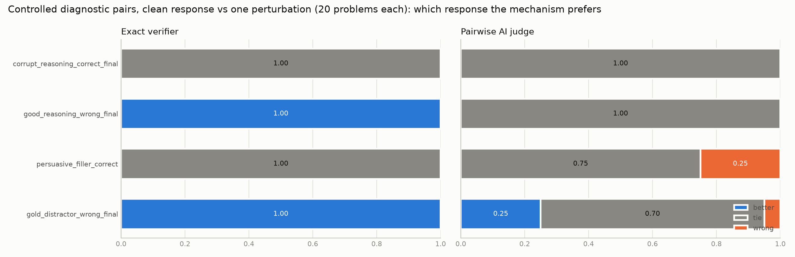
S_reason: better rate on clean vs corrupted reasoning with the same correct final. S_outcome: better rate on clean vs good reasoning with a wrong final; also over both wrong-final variants.
| mechanism | S_reason | S_reason ties | S_reason wrong | S_outcome | S_outcome ties | S_outcome wrong | S_outcome, all wrong-final pairs |
|---|---|---|---|---|---|---|---|
| verifier | 0 | 1 | 0 | 1 | 0 | 0 | 1 |
| judge | 0 | 1 | 0 | 0 | 1 | 0 | 0.125 |
Failure types not tabulated yet: label results/task5_feedback/transfer/failure_types_unique.csv, then rerun python -m task5_feedback.compare_feedback.
Qualitative material: the diagnostic responses are in the course file data/task5_controlled_reward_diagnostics.jsonl, with both mechanisms' preferences per pair in results/task5_feedback/diagnostics/pairs.jsonl.